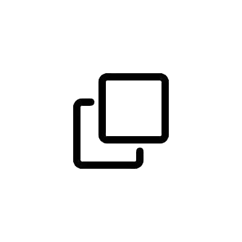

While diffusion models excel at generating high-quality samples, their latent variables typically lack semantic meaning and are not suitable for representation learning. Here, we propose InfoDiffusion, an algorithm that augments diffusion models with low-dimensional latent variables that capture high-level factors of variation in the data. InfoDiffusion relies on a learning objective regularized with the mutual information between observed and hidden variables, which improves latent space quality and prevents the latents from being ignored by expressive diffusion-based decoders. Empirically, we find that InfoDiffusion learns disentangled and human-interpretable latent representations that are competitive with state-of-the-art generative and contrastive methods, while retaining the high sample quality of diffusion models. Our method enables manipulating the attributes of generated images and has the potential to assist tasks that require exploring a learned latent space to generate quality samples, e.g., generative design.
@inproceedings{wang2023infodiffusion,
title={Infodiffusion: Representation learning using information maximizing diffusion models},
author={Wang, Yingheng and Schiff, Yair and Gokaslan, Aaron and Pan, Weishen and Wang, Fei and De Sa, Christopher and Kuleshov, Volodymyr},
booktitle={International Conference on Machine Learning},
pages={36336--36354},
year={2023},
organization={PMLR}
}

A diffusion model gradually transforms data \(\mathbf{x}_0\) from the data distribution into Gaussian noise \(\mathbf{x}_T\) through a series of latent variables \(\mathbf{x}_{1:T}\). This transformation is modeled as a Markov chain:
The noising process starts with clean data and progressively adds noise at each step:
Each noising step is a Gaussian transformation governed by a schedule \(\alpha_t\), with the cumulative product \(\bar{\alpha}_t\) defining the variance:
Training the model involves maximizing the evidence lower bound (ELBO) to optimize the parameters \(\theta\):
A key goal of generative modeling is representation learning: extracting latent concepts from data without supervision. Generative models \(p(\mathbf{x}, \mathbf{z})\) typically use low-dimensional variables \(\mathbf{z}\) to represent latent concepts, inferred via posterior inference over \(p(\mathbf{z} | \mathbf{x})\). Variational Autoencoders (VAEs) follow this framework but do not produce state-of-the-art samples. Diffusion models, on the other hand, generate high-quality samples but lack an interpretable low-dimensional latent space, making them less suitable for representation learning.
We introduce a diffusion model with a semantically meaningful latent space while maintaining high sample quality. Our approach includes three main steps:
We define an auxiliary-variable diffusion model as:
This model performs a reverse diffusion process \(p_{\theta}(\mathbf{x}_{t-1} | \mathbf{x}_t, \mathbf{z})\) over \(\mathbf{x}_{0:T}\) conditioned on auxiliary latents \(\mathbf{z}\), which are distributed according to a prior \(p(\mathbf{z})\).
The auxiliary latents \(\mathbf{z}\) aim to encode high-level representations of \(\mathbf{x}_0\). These latents are not restricted in dimension and can be continuous or discrete, representing various factors of variation. The prior \(p(\mathbf{z})\) ensures a principled probabilistic model, allowing unconditional sampling of \(\mathbf{x}_0\) and encoding domain knowledge about \(\mathbf{z}\). For example, if the dataset has \(K\) distinct classes, we can set \(p(\mathbf{z})\) to be a mixture of \(K\) components.
The decoder \(p_{\theta}(\mathbf{x}_{t-1} | \mathbf{x}_t, \mathbf{z})\) is conditioned on the auxiliary latents \(\mathbf{z}\). In a trained model, \(\mathbf{z}\) captures high-level concepts (e.g., age or skin color), while the sequence of \(\mathbf{x}_t\) progressively adds lower-level details (e.g., hair texture). Following previous work, we define the decoder as:
Diffusion models with auxiliary latents face two main risks. First, an expressive decoder \(p_\theta(\mathbf{x}_{t-1}\mid\mathbf{x}_t, \mathbf{z})\) may ignore low-dimensional latents \(\mathbf{z}\) and generate \(\mathbf{x}_{t-1}\) unconditionally. Second, the approximate posterior \(q_\phi(\mathbf{z}\mid\mathbf{x}_0)\) may fail to match the prior \(p(\mathbf{z})\) due to weak prior regularization relative to the reconstruction term. This degrades the quality of both ancestral sampling and latent representations.
To address these issues, we propose two regularization terms: a mutual information term and a prior regularizer. We refer to this approach as InfoDiffusion.
To ensure the model does not ignore the latents \(\mathbf{z}\), we augment the learning objective with a mutual information term between \(\mathbf{x}_0\) and \(\mathbf{z}\) under \(q_\phi(\mathbf{x}_0, \mathbf{z})\), the joint distribution over observed data \(\mathbf{x}_0\) and latent variables \(\mathbf{z}\). Formally, the mutual information regularizer is defined as:
Here, \(q_\phi(\mathbf{z})\) is the marginal approximate posterior distribution, defined as the marginal of the product \(q_\phi(\mathbf{z}\mid\mathbf{x}_0)q(\mathbf{x}_0)\). Maximizing mutual information encourages the model to generate \(\mathbf{x}_0\) from which \(\mathbf{z}\) can be predicted.
To prevent a degenerate approximate posterior, we regularize the encoded samples \(\mathbf{z}\) to resemble the prior \(p(\mathbf{z})\). The prior regularizer is defined as:
where \(\text{D}\) is any strict divergence.
We train InfoDiffusion by maximizing a regularized ELBO objective:
where \(\mathcal{L}_D(\mathbf{x}_0)\) is from the denoising objective, and \(\zeta, \beta > 0\) are scalars controlling the regularization strength. We can rewrite this objective into a tractable form:
where We now state that \( \text{KL}(q_\phi(\mathbf{z}) || p(\mathbf{z})) \) can be replaced with any strict divergence \( \text{D}(q_\phi(\mathbf{z}) || p(\mathbf{z})) \) without any modification (see our paper for the full derivation).
Table 1. Analogy between progress in the space of auto-encoders and similar progress for diffusion models.
| Method | Non-Probabilistic | Probabilistic Extension | Regularized Extension |
|---|
| Auto-encoders | AE (LeCun, 1987) | VAE (Kingma & Welling, 2013) | InfoVAE (Zhao et al., 2017) |
| Diffusion models | DiffAE (Preechakul et al., 2022) | Variational Auxiliary-Variable Diffusion | InfoDiffusion |
The InfoDiffusion algorithm generalizes several existing methods. When the decoder performs one step of diffusion (\(T=1\)), it is equivalent to InfoVAE Choosing \(\lambda=0\) recovers the \(\beta\)-VAE model. When \(T=1\) and \(\text{D}\) is the Jensen-Shannon divergence, it recovers adversarial auto-encoders (AAEs). InfoDiffusion extends these models to diffusion decoders, similar to how DDPM extends VAEs. When \(\zeta=\lambda=0\), it recovers DiffAE.
Table 2. Comparison of InfoDiffusion to other auto-encoders (top) and diffusion models (bottom) in terms of enabling semantic latents, discrete latents, custom priors, mutual information maximization (Max MI), and high-quality generation (HQ samples).| Semantic latents | Discrete latents | Custom prior | Max MI | HQ samples | |
|---|---|---|---|---|---|
| AE | ✗ | ✗ | ✗ | ✗ | ✗ |
| VAE | ✓ | ✓ | ✓ | ✗ | ✗ |
| \(\beta\)-VAE | ✓ | ✓ | ✓ | ✓ | ✗ |
| AAE | ✓ | ✗ | ✓ | ✓ | ✗ |
| InfoVAE | ✓ | ✓ | ✓ | ✓ | ✗ |
| DDPM | ✗ | ✗ | ✗ | ✗ | ✓ |
| DiffAE | ✓ | ✗ | ✗ | ✗ | ✓ |
| InfoDiffusion | ✓ | ✓ | ✓ | ✓ | ✓ |
Figure 1. Latent code \(\mathbf{z}\) captures high-level semantic detail.
Figure 2. Finding disentangled dimensions in InfoDiffusion’s auxiliary latent variable \(\mathbf{z}\).
Figure 3. Latent space interpolation for relevant baselines (a-c) and InfoDiffusion (d). InfoDiffusion has a smooth latent space and maintains high image generation quality. Reconstructions of the original images are marked by red boxes.
Table 3. Latent quality, i.e. classification accuracies for logistic regression classifiers trained on the latent code \(\mathbf{z}\), and FID.
| FashionMNIST | CIFAR-10 | FFHQ | ||||
|---|---|---|---|---|---|---|
| Latent Qual. ↑ | FID ↓ | Latent Qual. ↑ | FID ↓ | Latent Qual. ↑ | FID ↓ | |
| AE | 0.819 ± 0.003 | 62.9 ± 2.1 | 0.336 ± 0.005 | 169.4 ± 2.4 | 0.615 ± 0.002 | 92.3 ± 2.7 |
| VAE | 0.796 ± 0.002 | 63.4 ± 1.6 | 0.342 ± 0.004 | 177.2 ± 3.2 | 0.622 ± 0.002 | 95.4 ± 2.4 |
| β-VAE | 0.779 ± 0.004 | 66.9 ± 1.8 | 0.253 ± 0.003 | 183.3 ± 3.1 | 0.588 ± 0.002 | 99.7 ± 3.4 |
| InfoVAE | 0.807 ± 0.003 | 55.0 ± 1.7 | 0.357 ± 0.005 | 160.7 ± 2.5 | 0.613 ± 0.002 | 86.9 ± 2.2 |
| DiffAE | 0.835 ± 0.002 | 8.2 ± 0.3 | 0.395 ± 0.006 | 32.1 ± 1.1 | 0.608 ± 0.001 | 31.6 ± 1.2 |
| InfoDiffusion (\(\lambda=0.1, \zeta=1\)) | 0.839 ± 0.003 | 8.5 ± 0.3 | 0.412 ± 0.003 | 31.7 ± 1.2 | 0.609 ± 0.002 | 31.2 ± 1.6 |
| w/ learned latent | 7.4 ± 0.2 | 31.5 ± 1.8 | 30.9 ± 2.5 | |||
Table 4. Disentanglement and latent quality metrics and FID. For 3DShapes, we check the image quality manually and label the models which generate high-quality images with check marks (‘Image Qual.’). For CelebA, ‘Attrs.’ counts the number of “captured” attributes when calculating the TAD score. ‘Latent Quality’ is measured as AUROC scores averaged across attributes for logistic regression classifiers trained on the latent code \(\mathbf{z}\).
| 3DShapes | CelebA | |||||
|---|---|---|---|---|---|---|
| DCI ↑ | Image Qual. | TAD ↑ | Attrs ↑ | Latent Qual. ↑ | FID ↓ | |
| AE | 0.219 ± 0.001 | ✗ | 0.042 ± 0.004 | 1.0 ± 0.0 | 0.759 ± 0.003 | 90.4 ± 1.8 |
| VAE | 0.276 ± 0.001 | ✗ | 0.000 ± 0.000 | 1.0 ± 0.0 | 0.770 ± 0.002 | 94.3 ± 2.8 |
| \(\beta\)-VAE | 0.281 ± 0.001 | ✗ | 0.088 ± 0.051 | 1.6 ± 0.1 | 0.699 ± 0.001 | 99.8 ± 2.4 |
| InfoVAE | 0.134 ± 0.001 | ✗ | 0.000 ± 0.000 | 1.0 ± 0.0 | 0.757 ± 0.003 | 77.8 ± 1.6 |
| DiffAE | 0.196 ± 0.001 | ✓ | 0.155 ± 0.010 | 2.0 ± 0.0 | 0.799 ± 0.002 | 22.7 ± 2.1 |
| InfoDiffusion (\(\lambda=0.1, \zeta=1\)) | 0.109 ± 0.001 | ✓ | 0.192 ± 0.004 | 2.8 ± 0.4 | 0.848 ± 0.001 | 23.8 ± 1.6 |
| w/ learned latent | ✓ | 21.2 ± 2.4 | ||||
| InfoDiffusion (\(\lambda=0.01, \zeta=1\)) | 0.342 ± 0.002 | ✓ | 0.299 ± 0.006 | 3.0 ± 0.0 | 0.836 ± 0.002 | 22.3 ± 1.2 |
| w/ learned latent | ✓ | 22.3 ± 1.2 | ||||
Table 5. Representation learning comparison to contrastive meth- ods. ‘Gen.’ indicates whether the model has generative capabilities. ‘Dim.’ denotes the latent dimension. Disentanglement is measured by TAD. ‘Latent Quality’ is measured as AUROC scores averaged across CelebA attributes for logistic regression classifiers trained on latent representations.
| CelebA | Gen. | Dim. | TAD ↑ | Latent Qual. ↑ |
|---|---|---|---|---|
| SIMCLR | ✗ | 2048 | 0.192 ± 0.015 | 0.812 ± 0.003 |
| MOCO-v2 | ✗ | 2048 | 0.279 ± 0.025 | 0.846 ± 0.001 |
| DINO | ✗ | 384 | 0.000 ± 0.000 | 0.592 ± 0.003 |
| InfoDiffusion | ✓ | 32 | 0.299 ± 0.006 | 0.836 ± 0.002 |
Table 6. Representation learning comparison to SIMCLR and PDAE with 32-dimensional latents. ‘Gen.’ indicates whether the model has generative capabilities. ‘Attrs.’ counts the number of “captured” attributes when calculating the TAD score. ‘Latent Quality’ is measured as AUROC scores averaged across attributes for logistic regression classifiers trained on \(\mathbf{z}\).
| CelebA | Gen. | TAD ↑ | Attrs ↑ | Latent Qual. ↑ |
|---|---|---|---|---|
| SIMCLR | ✗ | 0.062 ± 0.005 | 2.6 ± 0.5 | 0.757 ± 0.002 |
| PDAE | ✓ | 0.009 ± 0.001 | 1.0 ± 0.0 | 0.767 ± 0.003 |
| InfoDiffusion* | ✓ | 0.299 ± 0.006 | 3.0 ± 0.0 | 0.836 ± 0.002 |